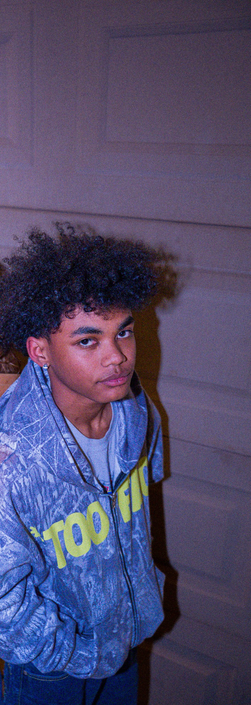
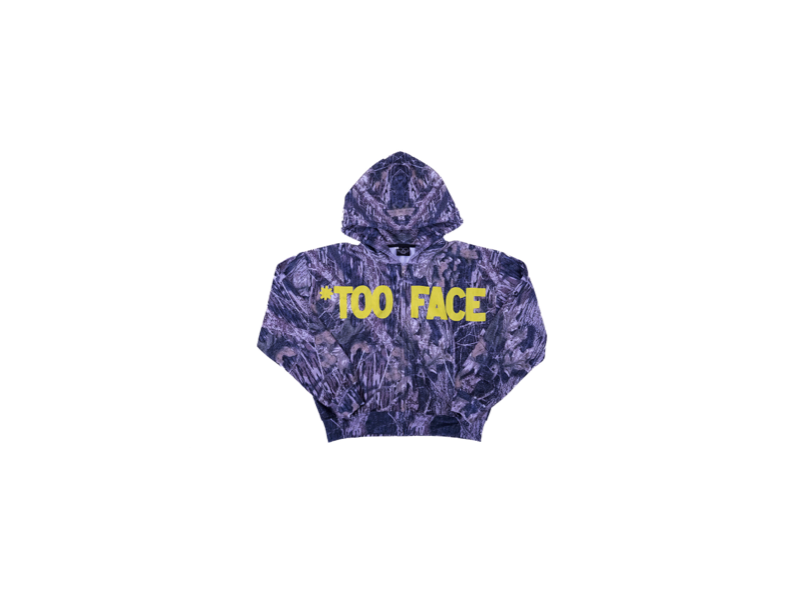
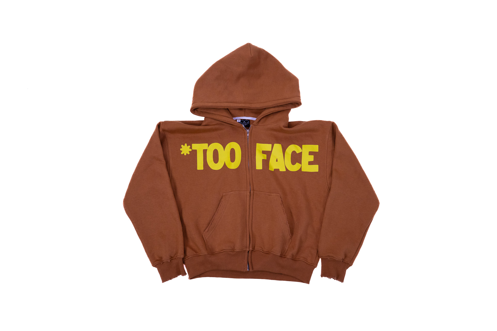
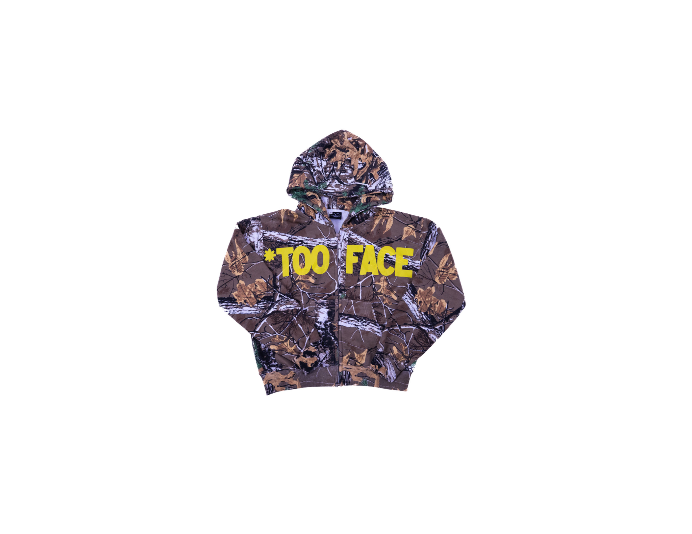

05
Professional Persona
Professional
Persona Video.
A look into the vision behind Too Faced Clothing and the person building it.

Watch on YouTube
Owner & Founder — Too Faced Clothing
Building a streetwear brand at the intersection of cinematic storytelling, fashion design, and business strategy.

I'm Barron J. Benbow — founder of Too Faced Clothing, a streetwear label rooted in cinematic storytelling and intentional design. I started the brand in 2025 with a vision to create pieces that speak before you do: clothing that carries narrative, culture, and identity in every thread.
As an accounting student at the University of Arizona's Eller College of Management, I bring a rare edge to the creative industry — I understand not just how to build a brand that looks good, but how to build one that runs well. From design development and manufacturer coordination to content strategy and event management, I manage every layer of the business myself.
My goal is simple: to prove that streetwear can be both culturally authentic and professionally executed. Too Faced is the proof.
Brand photography, product drops, and visual storytelling.



A campaign exploring the duality of senior year — polished, picture-perfect moments vs. the messy reality underneath.
Rooted in the classic yearbook era and mid-90s visual culture, the campaign juxtaposes curated, portrait-style graduation moments against unfiltered reality — late-night burnout, party scenes, and the small escapes students reach for under pressure. The tone is honest, not dark: a genuine reflection of the high-pressure experience of transitioning into a new stage of life.
Corrupted nostalgia through VHS distortion and grain. High-saturation Y2K color grading against washed-out vintage bases. Practical fluorescent and flash lighting to give each environment a distinct visual signature that reinforces the brand's core duality.
Creative lead — overseeing content creation strategy, visual direction, and how campaign content is distributed across platforms. Produced in collaboration with @zallenmedia.
Charting my growth as a professional across identity, values, behavior, and brand — from the start of this semester to now.
This semester gave me a framework to articulate what was already true about how I operate. Through structured self-reflection, I identified four core values that show up in both my academic life and the way I run Too Faced Clothing: authenticity, creativity, accountability, and integrity.
Authenticity drives every creative decision I make — the brand reflects real culture, not a manufactured image. Creativity is how I approach problems, whether it's a product design challenge or an accounting case study. Accountability means I own outcomes regardless of circumstances; if something misses the mark, I look inward first. Integrity is the foundation underneath all of it — doing the right thing even when no one is watching, which matters just as much in business as it does in life.
What surprised me most was realizing these values weren't new — I'd just never put language to them. Naming them made me a more intentional professional.
My Self-Perception Inventory identified me as a Driver — high Proactivity, low Reactivity — task-focused, decisive, and results-driven. I like to win, move at a fast pace, and build strategies that ensure I do. But when my Professional Reputation Survey came back, reviewers placed me squarely in the Analytical quadrant: low Proactivity, low Reactivity.
That gap is meaningful. I see myself as assertive and action-oriented. The people around me experience someone more reserved, methodical, and deliberate. The AI-generated summary from Radian put it plainly: my analytical approach "sometimes leads to prioritizing my own comfort over others' perceptions," and there's a clear call to "give more weight to external perspectives." That's the communication growth edge I'm actively working on.
My SPI identified my informal team role as Process — I'm most naturally concerned with implementation, the details of execution, and using systems to complete tasks. I'm reliable, organized, and conscientious about following through. The Process role paired with a Driver communication style means I don't just push for results: I build the structure that gets us there.
In team settings this semester, I saw both the strength and the shadow of that combination. My directness helped move projects forward. But my Relationships score of 2.67 — the highest and most notable score in my work environment profile — revealed something I don't always act on: I genuinely value building trust through time spent together, not just through shared output. My growth area is learning to invest in that relational side before the deadline, not after.
The most important shift: learning that slowing down to bring people with me is not a weakness — it's what makes a Driver actually effective.
Concerned with implementation, the details of execution, and the use of processes and systems to complete tasks.
One of the most honest findings from my SPI was selecting "Anxious" as a self-descriptor alongside Driven, Competitive, and Calm. That's not a contradiction I would have said out loud before this semester — but it's real. As a Driver, I need control and move fast toward outcomes. Anxiety enters when the path forward isn't clear.
This semester, launching Too Faced Clothing while carrying a full academic load forced me to apply a growth mindset in real time. Manufacturer timelines slipped. Deliverables stacked. I couldn't control every variable. The growth was not in eliminating that anxiety — it was in learning that uncertainty doesn't have to stop action. I could move forward without certainty and still execute well.
That shift — from needing a clear plan to being able to adapt mid-execution — is the most significant professional growth I've made this semester.
The Radian Adjective Analysis compares the words you select to describe yourself (your identity) with the words your reviewers choose (your reputation). Earlier in the semester, my overlap was zero — every adjective I selected sat in the "SPI Only" column, unseen by anyone around me.
With updated responses, the picture changed significantly. Six of my seven self-selected words — Driven, Competitive, Calm, Trusting, Easygoing, and Anxious — are now confirmed by reviewers as well. That's real validation: the people around me see the same core identity I see in myself. Respects Authority remains mine alone.
But reviewers also added a rich set of words I didn't select for myself: Well-Informed, Hard-Working, Well-Rounded, Idea-Generator, Problem-Solver, Growth-Oriented, Self-Confident, Independent, and more. The Radian AI summary describes me as "a highly driven, hard-working, and well-informed individual who is both competitive and well-rounded." That's a reputation worth owning — and a stronger foundation to build from than where I started.
The remaining growth area: my analytical communication style is being read as more reserved than I intend. The work now is making my proactivity and assertiveness more externally visible — showing up in rooms the way I show up in my own head.
Driven, competitive, calm under pressure — a creative builder with an analytical edge
Hard-working, well-informed, well-rounded, idea-generator — a stronger external brand than I gave myself credit for
Close the Driver vs. Analytical gap — make my assertiveness and proactivity as visible externally as they feel internally
Course assignments and projects that demonstrate my skills in strategic communication, brand analysis, and business writing.
BCOM 314R — Business Communication · University of Arizona
As part of a five-person consulting team, I co-developed a communication plan for CeraVe, diagnosing a messaging gap with Gen X and Baby Boomer audiences and presenting strategic recommendations to FSRS.
Demonstrates stakeholder analysis, competitive benchmarking, and strategic messaging. I led the strategy section, proposing three solutions: a website redesign, a spokesperson campaign, and a generational empowerment initiative.
This project reflects my ability to analyze real brand communication failures and deliver polished, data-backed recommendations — skills I apply directly in building Too Faced Clothing.
BNAN 276 — Business Analytics · University of Arizona · April 2025
Prepared a formal memo to E. and J. Gallo Winery analyzing a distributor dataset of 13,050 wines — evaluating name, country, region, ratings, vintage year, type, and price to identify opportunities for the Gallo store portfolio.
Demonstrates proficiency in descriptive statistics, hypothesis testing, and data visualization using Tableau. Applied skewness analysis, significance testing at the 0.05 level, and regional comparisons to surface actionable insights from a large dataset.
This case bridges my accounting background with analytical problem-solving — the same quantitative rigor I use to manage inventory, pricing, and margins at Too Faced Clothing, applied to a real-world business dataset.
BNAN 276 — Business Analytics · University of Arizona · September 2025
Authored an analytics report to American Express analyzing a dataset of ~25,000 Taiwanese credit card customers. The goal was to identify whether spending patterns differ by gender and whether average payments vary between April and September.
Demonstrates proficiency in two-sample t-testing, null hypothesis significance testing (p-value = 9.65E-06 and 0.0009), confidence interval construction, and translating statistical findings into clear business recommendations.
This report shows I can communicate complex quantitative findings in plain business language — a skill that directly supports my work analyzing pricing, margins, and customer behavior at Too Faced Clothing.
A look into the vision behind Too Faced Clothing and the person building it.
Open to brand collaborations, creative partnerships, internships, and conversations about fashion & business.